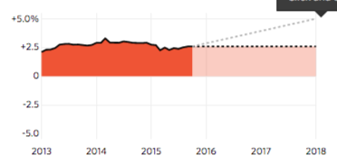

Ви прокралися до таємного пункту керування українською пенсійною системою. Рухаючи наданими параметрами, Ви можете керувати балансом Пенсійного фонду і запобігти колапсу усієї системи. Ваше завдання — зменшити дефіцит Пенсійного фонду, не допустивши його падіння до катастрофічної цифри — 100 млрд грн. Від Вас залежить доля понад 10 мільйонів пенсіонерів. І Ваша доля також — Ви ж теж через якийсь час станете одним із них.
Пенсійний вік:
Частка платників:
Ставка ЄСВ:
Середня пенсія:
Зараз чоловіки йдуть на пенсію у 60 років. Для жінок пенсійний вік зростає щороку на 6 місяців і у 2021-му буде таким же, як у чоловіків
Кошти зі сплати Єдиного соціального внеску, що йдуть на пенсійні виплати
Відсоток тих, хто платить Єдиний соціальний внесок
Розмір середньої пенсії за віком (станом на початок грудня 2016 року) становить 1800 грн. Зазвичай середня зарплата УТРИЧІ вища, ніж середня пенсія
На цьому графіку показаний дефіцит Пенсійного фонду. Погані демографічні показники (низька народжуваність, високий рівень еміграції молоді тощо), а також непродумані дії політиків та нестабільна ситуація в країні спричнили те, що видатки Пенсійного фонду суттєво перевищують його доходи. Через це з Державного бюджету щороку виділяються шалені кошти на покриття дефіциту (тільки у 2016 році на ці потреби було закладено понад 88 мільярдів гривень). Ці гроші натомість могли би працювати на економіку та підвищувати добробут українців.